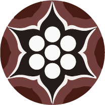

오방색
청은 목요일을 뜻하며
방위는 동쪽을 가르킨다.
동방에는 태양이 뜨는
방향이라 나무가
많아 봄을 상징한다.
방위는 동쪽을 가르킨다.
동방에는 태양이 뜨는
방향이라 나무가
많아 봄을 상징한다.
백은 금요일을 뜻하며
방위는 서쪽을 가르킨다.
서방은 쇠가 많다해서
가을 상징한다.
방위는 서쪽을 가르킨다.
서방은 쇠가 많다해서
가을 상징한다.
황은 월요일을 뜻하며
방위는 중앙으로
땅의 중심을 가르킨다.
해와 가장 가깝다 여겨
광명을 상징한다.
방위는 중앙으로
땅의 중심을 가르킨다.
해와 가장 가깝다 여겨
광명을 상징한다.
적은 화요일을 뜻하며
방위는 남쪽을 가르킨다.
남방은 언제나 해가 강렬하여
여름을 상징한다.
방위는 남쪽을 가르킨다.
남방은 언제나 해가 강렬하여
여름을 상징한다.
흑은 수요일을 뜻하며
방위는 북쪽을 가르킨다.
북방은 골 깊은 곳으로 여겨
겨울을 의미한다.
방위는 북쪽을 가르킨다.
북방은 골 깊은 곳으로 여겨
겨울을 의미한다.
오방색
어린이가 명절에 입는 색동옷 소매의 오방색 배열, 혼례 때 신부가 입는 삼회장저고리, 잔칫상의 국수에 올리는 오색 고명 등 새로운 시간이 시작될 때나 경사가 있을 때 입는 옷이나 먹거리의 색에 상생의 원리를 적용하여 악귀나 병마를 물리치고자 했던 예를 우리는 쉽게 찾을 수 있다. 단청 문양은 각각의 색이 가진 순수성을 드러내면서 운동성을 함께 갖추고 있다. 면이 축소되어 넓이가 없는 것이 선이고, 선이 확대되어 넓이가 있는 것이 면이다. 색은 면을 통해 잘 드러나고, 운동은 선을 통해서 살아난다. 면이 너무 확대되면 운동성을 상실하고 선으로만 표시하면 색의 순수성을 잃게 된다. 이 두 가지 성질을 동시에 만족시키려면 적당한 넓이와 운동성을 갖춰야 한다. 이 두 가지를 단청의 색띠가 충족시키고 있다.
한국의 단청은 날씨가 맑고 밝은 날 더욱 그 진면목이 드러난다. 단청은 넓은 처마 아래의 창방이나 도리, 서까래, 공포 등에 올려져 있기 때문에 직사광선에 잘 노출되지 않는다. 그러나 햇빛이 밝게 비치는 날 마당에 반사된 순한 빛을 받게 되면 단청은 화사한 아름다움을 드러낸다. 그러나 그 화사함에는 허세나 뽐냄이 없으며, 오히려 동심의 세계에서 감지되는 솔직함과 복숭아꽃 같은 순정이 배어 있다. 단청이 주는 이런 느낌은 민화를 볼 때의 느낌과 다를 바가 없는 것으로, 이런 점 때문에 단청은 색과 문양으로서 한국인의 집단 개성을 잘 보여 주는 것 중에 하나라고 해도 좋을 것이다.
단청장(丹靑匠)은 자신의 개성을 문양이나 색에 불어 넣으려는 생각은 애당초 하지 않았고, 오직 정해진 문양과 색채를 전수받아 한 치의 어긋남도 없이 반복 재생하는 것에만 힘을 쏟았다. 단청에 끼어든 인간의 체취가 있다면 그것은 단청장 개인의 개성이 아니라 한반도라는 자연환경 속에서 살아 오는 동안 자신도 모르게 길러진 한국적 정서와 미감일 것이다. 장인의 개성이 철저히 배제된 단청은 바로 그 점 때문에 우리의 자연환경과 극적인 조화를 이루어 낼 수 있었던 것이다
단청 채색 과정
면 닦기
&
가칠하기
&
가칠하기
문양 만들기
타분하기
색 넣기

먹기화
&
포수및 오일칠
&
포수및 오일칠
면 닦기
단청 문양을 채색할 부재의 바탕면을 연마지로 매끄럽게 닦는다. 바탕면이 손상되지 않도록 마른 천이나 부드러운 솔로 털어낸다.
포수: 안료가 잘 묻도록 모든 바탕면에 아교 (동물의 가죽이나 뼈로 만들 교착제)를 2회 이상 충분히 발라준다.
포수: 안료가 잘 묻도록 모든 바탕면에 아교 (동물의 가죽이나 뼈로 만들 교착제)를 2회 이상 충분히 발라준다.
가칠하기
단청할 바탕면에 뇌록색으로 가칠 작업을 한다. 바탕색을 2회 도채한다.
문양 만들기
출초 : 단청의 초안을 초지에 그리는 작업으로 일정한 문양이 나오도록 종이를 접어서 그린다. 단청 문양은 등분화로 출초를 한다. 삼등분으로 나누고 또 더 정확하게 나누기 위해서 반을 접어서 문양을 그려 반대쪽에 다시 초상을 만들어서 그리면 육판연화의 삼분의 일에 대한 초상이 나온다.
천초: 출초한 문양의 윤곽을 따라 대바늘로 구멍을 뚫는 작업이다. 지름 0.5~1mm 되는 촛바늘로 문양의 왹곽선을 2~3mm 간격으로 작은 구멍을 뚫어 초지본을 완성한다.
천초: 출초한 문양의 윤곽을 따라 대바늘로 구멍을 뚫는 작업이다. 지름 0.5~1mm 되는 촛바늘로 문양의 왹곽선을 2~3mm 간격으로 작은 구멍을 뚫어 초지본을 완성한다.
타분하기
목재에 단청의 초안을 옮기는 작업이다.
천초한 초지본을 부재에 대고 호분(조개껍질 가루)을 넣은 주머니를 두드려 흰 점선으로 문양이 나타나도록 작업한다. 문양의 윤곽이 선명하게 보이도록 호분 주머니를 천천히 두드린다.
천초한 초지본을 부재에 대고 호분(조개껍질 가루)을 넣은 주머니를 두드려 흰 점선으로 문양이 나타나도록 작업한다. 문양의 윤곽이 선명하게 보이도록 호분 주머니를 천천히 두드린다.
색 넣기
단청 문양에 안료를 채색하는 작업을 한다. 이 작업을 도채라 부른다.
가장 밝은 색을 먼저 칠하는데, 이것을 초빛라고 한다. 초빛이 마르면 이빛을 칠한다.
도채는 문양의 색상별로 초빛, 이빛, 삼빛, 순서가 있어 순서에 맞게 칠한다.
가장 밝은 색을 먼저 칠하는데, 이것을 초빛라고 한다. 초빛이 마르면 이빛을 칠한다.
도채는 문양의 색상별로 초빛, 이빛, 삼빛, 순서가 있어 순서에 맞게 칠한다.
먹기화
채색한 문양 둘레에 먹석과 분선을 둘러 그리는 ‘먹기화시분’을 작업한다. 채색한 문양의 윤곽이 뚜렷하게 나타나도록 그 둘레에 검은색의 먹선과 흰색의 분선을 나란히 그린다. 먹기화는 단청에서 마무리 선으로 중요한 의미를 가지고 있다. 각종 채색에 한계를 구분지어주고 문양을 더욱 뚜렷하게 나타내준다.
포수및 오일칠
우기와 습기로부터 단청의 채색을 보호하기 위해 들기름을 2회 이상 도포한다.
단청의 무늬
단청 문양의 태반은 식물, 특히 화초가 차지하고 있다. 형태나 색채가 다양하고 아름다우며, 문양화하기 쉬운 장점이 있기 때문이다. 특히 화초 중에서 연꽃은 실로 단청 문양의 대표격이라 해도 과언이 아니다. 꽃 자체가 순결 청정한 이미지를 가지고 있는 데다 강력한 장식 효과를 발휘하기 때문에 궁궐과 사찰을 막론하고 널리 시문되고 있다. 연꽃 문양은 시선 방향에 따라 위에서 바라본 평면·옆에서 바라본 입체 연꽃이 있고, 꽃잎 모양에 따라 파련, 웅련 등이 있다. 평면 연꽃은 꽃잎이 6개, 또는 8개인 것이 가장 많다.
파련

웅련
보상화문
녹화
쇠코화
주화
매화점
태평화
단청장
단청장은 전통 목조 건축물의 천장, 기둥, 벽과 같은 가구부재 위에 오방색의 기본 색채로 채색을 하고, 문양과 그림을 그리는 기능을 가진 장인이다. 국가중요무형문화재 제48호로 지정되어 있다.
단청은 목조 건축이 발달하면서 목재의 단점을 해결하여 오래 보존하기 위해 자연스럽게 발전하기 시작하였다. 단청장에 대한 가장 오랜 기록은 『삼국사기(三國史記)』 권48 솔거조에서 볼 수 있다. 솔거는 신라 제24대 진흥왕(재위 540~576) 때의 화가로 황룡사 벽에 노송을 그렸는데, 후에 그 절의 스님이 단청으로 보수하였다는 내용이 있다. 단청은 권위와 신성함을 드러내야 하는 궁궐, 불교 사찰, 유교 사원 등의 건축물을 중심으로 조선시대까지 꾸준히 발전하였다.
조선시대 단청장은 단청 업무만 전문적으로 한 것은 아니었다. 일반적으로 그림 업무에 종사하던 사람들이 단청 업무도 함께 도맡았다. 그래서 단청장을 부르는 명칭도 예로부터 다양할 수밖에 없었다. 크게 두 가지로 구분해 볼 수 있는데, 먼저 일반인으로서 단청에 종사한 이들로는 화사·화원·화공·가칠장·도채장 등이 있었다. 또한 사찰에 소속된 승려로 화승이 있었다. 특히 불화에 숙달된 승려는 금어, 단청에만 단순히 종사하던 승려는 어장이라 하였다.
조선시대 궁궐 단청은 주로 토목·영선(건축물 따위를 새로 짓거나 수리함)을 관장한 선공감 소속 장인인 경공장에 의해 이루어졌다. 이들은 도채공이라 불렀으며, 궁궐을 비롯하여 관아·객사·역관·사묘·누정 등 관공서의 단청을 전문적으로 하였다. 또한 도화서(그림에 관한 일을 맡아보던 관아)에 소속된 화원들도 병조에 파견되어 단청장을 겸하기도 하였다.
한편 사찰에도 승려 단청장이 있었다. 이들은 승려 신분의 화원들로 단청 일을 맡았는데 단청만을 전문적으로 한 것이 아니라 사찰에 필요한 예배용 불화, 불상, 공예 등의 작업에도 함께 참여하였다. 그 중 불화 화원은 최고의 대우를 받았던 반면, 단청에만 종사하던 화원은 상대적으로 낮은 평가를 받았다. 불화가 단청보다 숙련된 기술과 묘사 솜씨를 요구하였기 때문이다. 또한 사찰의 단청장들은 조선시대 궁궐의 대규모 단청 사업에 동원되기도 하였다. 1647년(인조 25) 중건된 창경궁 저승전의 단청에는 도화서 화원이던 김명국을 책임자로 66명의 승려 단청장이 함께 참여하였고, 1796년(정조 20) 완공된 수원 화성의 단청에서도 단청장 46명 중 승려가 40명을 차지하였다. 궁궐의 규모에 따라 도화서 화원이나 선공감의 도채공보다 오히려 많은 수가 참여하기도 하였다.
단청은 목조 건축이 발달하면서 목재의 단점을 해결하여 오래 보존하기 위해 자연스럽게 발전하기 시작하였다. 단청장에 대한 가장 오랜 기록은 『삼국사기(三國史記)』 권48 솔거조에서 볼 수 있다. 솔거는 신라 제24대 진흥왕(재위 540~576) 때의 화가로 황룡사 벽에 노송을 그렸는데, 후에 그 절의 스님이 단청으로 보수하였다는 내용이 있다. 단청은 권위와 신성함을 드러내야 하는 궁궐, 불교 사찰, 유교 사원 등의 건축물을 중심으로 조선시대까지 꾸준히 발전하였다.
조선시대 단청장은 단청 업무만 전문적으로 한 것은 아니었다. 일반적으로 그림 업무에 종사하던 사람들이 단청 업무도 함께 도맡았다. 그래서 단청장을 부르는 명칭도 예로부터 다양할 수밖에 없었다. 크게 두 가지로 구분해 볼 수 있는데, 먼저 일반인으로서 단청에 종사한 이들로는 화사·화원·화공·가칠장·도채장 등이 있었다. 또한 사찰에 소속된 승려로 화승이 있었다. 특히 불화에 숙달된 승려는 금어, 단청에만 단순히 종사하던 승려는 어장이라 하였다.
조선시대 궁궐 단청은 주로 토목·영선(건축물 따위를 새로 짓거나 수리함)을 관장한 선공감 소속 장인인 경공장에 의해 이루어졌다. 이들은 도채공이라 불렀으며, 궁궐을 비롯하여 관아·객사·역관·사묘·누정 등 관공서의 단청을 전문적으로 하였다. 또한 도화서(그림에 관한 일을 맡아보던 관아)에 소속된 화원들도 병조에 파견되어 단청장을 겸하기도 하였다.
한편 사찰에도 승려 단청장이 있었다. 이들은 승려 신분의 화원들로 단청 일을 맡았는데 단청만을 전문적으로 한 것이 아니라 사찰에 필요한 예배용 불화, 불상, 공예 등의 작업에도 함께 참여하였다. 그 중 불화 화원은 최고의 대우를 받았던 반면, 단청에만 종사하던 화원은 상대적으로 낮은 평가를 받았다. 불화가 단청보다 숙련된 기술과 묘사 솜씨를 요구하였기 때문이다. 또한 사찰의 단청장들은 조선시대 궁궐의 대규모 단청 사업에 동원되기도 하였다. 1647년(인조 25) 중건된 창경궁 저승전의 단청에는 도화서 화원이던 김명국을 책임자로 66명의 승려 단청장이 함께 참여하였고, 1796년(정조 20) 완공된 수원 화성의 단청에서도 단청장 46명 중 승려가 40명을 차지하였다. 궁궐의 규모에 따라 도화서 화원이나 선공감의 도채공보다 오히려 많은 수가 참여하기도 하였다.